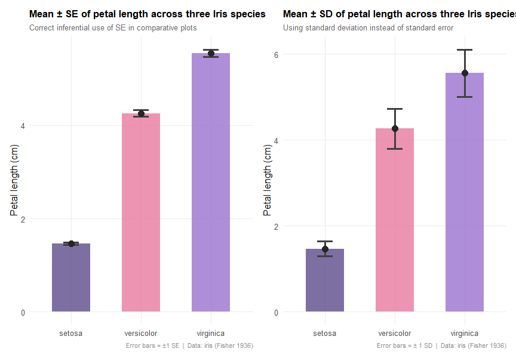

The Problem
You are reading a paper. Figure 2 shows three bars, one for each treatment. Each bar has a small vertical line on top — an error bar. You look at the legend. Sometimes it says "± SE". Sometimes "± SD". Sometimes it says nothing at all.
Does it matter? Enormously.
An error bar can represent two completely different things. It can describe how variable the individual measurements were in your sample. Or it can tell you how precisely the mean was estimated. Same bar, same units, same figure — but a completely different meaning.
This confusion is not a rare exception. A well-known survey of papers published in leading biology journals found that a substantial proportion of figures either used the wrong index for their purpose or failed to specify which one was shown. The result is that readers cannot always know what they are actually looking at.
By the end of this notebook you will know exactly what each index measures, when to use one and when to use the other, and why the choice matters every time you build or read a figure.
Two Indices, Two Questions
Imagine you have just measured the petal length of 50 Iris setosa specimens. Some are 1.2 cm, some are 1.7 cm. Most cluster around 1.5 cm. You could ask two very different questions about these numbers.
The first question is about the individuals: how spread out are they? How much does one petal differ from another? This is a question about biological variability — about the nature of the species itself.
The second question is about your estimate: how close is your sample mean of 1.46 cm to the true mean of the entire I. setosa population? If you went back and measured another 50 specimens, would you get 1.46 again, or 1.38, or 1.51? This is a question about the precision of your measurement.
These two questions have two different answers — and two different indices.
Standard Deviation — the answer to the first question
The Standard Deviation (SD) measures the typical distance of each individual observation from the sample mean. A large SD means individuals are very different from each other. A small SD means they are similar. It is a property of the population being studied, not of your experiment.

$x_i$ = individual observation | $\bar{x}$ = sample mean | $n-1$ = degrees of freedom (Bessel's correction)
Dividing by $n-1$ rather than $n$ makes the sample variance an unbiased estimator of the population variance $\sigma^2$. The sample mean $\bar{x}$ is itself estimated from the data, which uses up one degree of freedom. This will be explored in a dedicated notebook.
Standard Error — the answer to the second question
The Standard Error of the Mean (SE) estimates how much the sample mean would vary if you repeated the experiment many times. More precisely, it is the standard deviation of the sampling distribution of the mean — the distribution of all possible sample means you could obtain from the same population.
The SE is always smaller than the SD. It shrinks as you collect more data, because larger samples produce more stable mean estimates. Crucially, this does not mean the individuals become less variable — it means your estimate of their average becomes more reliable.

$s$ = sample standard deviation | $n$ = sample size | SE always decreases as $1/\sqrt{n}$
The Standard Error is not a measurement error, not instrument noise, and not a sign of poor data quality. It does not measure how much individuals differ from each other. It measures one specific thing: how much the sample mean would fluctuate if we repeated the sampling many times. A large SE means you need more data to pin down the mean reliably — nothing more, nothing less.
Key properties at a glance
- Both SD and SE are expressed in the same units as the data (e.g. cm, g, individuals per trap).
- SD is stable: it converges to the true population SD $\sigma$ as $n$ grows, but does not systematically decrease.
- SE decreases with $n$: to halve the SE you need to quadruple the sample size.
- The ratio $SD/SE$ is always exactly $\sqrt{n}$ — structural, not accidental.
- For roughly normal distributions, about 68% of individuals fall within $\bar{x} \pm SD$.
- The 95% Confidence Interval is approximately $\bar{x} \pm 1.96 \cdot SE$ for large samples.
The 68% rule we mentioned for SD only holds if your data follow a roughly Normal distribution. If your data are heavily skewed or contain extreme outliers, the SD still describes the spread accurately, but you cannot trust the "68% of observations" statement. Similarly, the factor 1.96 for the 95% CI is only reliable if you have a reasonably large sample (n ≥ 30). With smaller samples, the uncertainty itself has more uncertainty, and you must use Student's t instead. This is why we used the t-distribution in our earlier calculation on Iris setosa—and why we will dedicate an entire notebook to it.
Let Us Check on Real Data
Theory is useful. Numbers are better. Let us calculate SD and SE on the Iris setosa petal length data — 50 measurements, all in centimetres — and see what the results actually look like.
data(iris)
setosa_pl <- iris[iris$Species == "setosa", "Petal.Length"]
n <- length(setosa_pl)
xbar <- mean(setosa_pl)
sd_val <- sd(setosa_pl) # Bessel's correction (n-1) applied
se_val <- sd_val / sqrt(n) # no built-in function in base R
t_crit <- qt(0.975, df = n - 1) # Student's t, df = 49
ci_low <- xbar - t_crit * se_val
ci_high <- xbar + t_crit * se_val
cat(sprintf(" n : %d\n", n))
cat(sprintf(" Mean : %.4f cm\n", xbar))
cat(sprintf(" SD : %.4f cm\n", sd_val))
cat(sprintf(" SE : %.4f cm\n", se_val))
cat(sprintf(" SD / SE ratio : %.2f (= sqrt(%d) = %.2f)\n",
sd_val/se_val, n, sqrt(n)))
cat(sprintf(" Mean ± SD : [%.4f – %.4f] cm\n",
xbar-sd_val, xbar+sd_val))
cat(sprintf(" Mean ± SE : [%.4f – %.4f] cm\n",
xbar-se_val, xbar+se_val))
cat(sprintf(" 95%% CI (t, df=%d) : [%.4f – %.4f] cm\n",
n-1, ci_low, ci_high))Three numbers stand out.
SD = 0.174 cm. Individual petals deviate from the mean by about 0.17 cm on average. Roughly 68% of I. setosa petals are between 1.29 and 1.64 cm long. This is a statement about the biology of the species — not about your experiment.
SE = 0.025 cm. Your sample mean of 1.462 cm is estimated with an uncertainty of ±0.025 cm. This tells you how reliable the estimate is, regardless of how much individuals vary.
SD/SE = 7.07 = √50. Not a coincidence. Always exactly $\sqrt{n}$. With 200 observations instead of 50, the SD would stay ~0.174 cm while the SE would drop to ~0.012 cm. The individuals do not change. Your estimate improves.
We can say with 95% confidence that the true population mean of I. setosa petal length falls between 1.413 and 1.511 cm. For samples with $n \geq 30$ the normal approximation gives $CI_{95\%} \approx \bar{x} \pm 1.96 \cdot SE$. For smaller samples, use Student's $t$ quantile: qt(0.975, df = n-1).
library(ggplot2)
# colours
col_sd <- "#5e4b8b"; col_se <- "#e879a0"; col_mean <- "#1a1a2e"
# Plot 1: individual distribution + SD
p1 <- ggplot(data.frame(x = setosa_pl), aes(x = x)) +
geom_histogram(aes(y = after_stat(density)),
binwidth = 0.1, fill = "#9b72cf", color = "white", alpha = 0.7) +
geom_density(color = col_sd, linewidth = 1.2) +
geom_vline(xintercept = xbar, color = col_mean, linewidth = 1.2) +
geom_vline(xintercept = c(xbar-sd_val, xbar+sd_val),
color = col_sd, linetype = "dashed") +
labs(title = "Individual values — Iris setosa, Petal Length",
subtitle = "SD describes the spread of individual observations",
x = "Petal length (cm)", y = "Density") +
theme_minimal(base_size = 12)
# Plot 2: SD vs SE as error bars
# Plot 3: bootstrap sampling distribution
# Plot 4: three-species comparison with SE
# See full script for all four plots

The Common Trap
Here is the problem in its most visible form. The two figures below show exactly the same data — mean petal length for three Iris species — with two different error bars. Look at them before reading on. Watch carefully what changes when you switch from SE to SD — and how misleading the choice can be

When error bars represent the SD, they show you where individuals fall. When they represent the SE, they show you how precisely the mean was estimated. Since the SE is always smaller than the SD by a factor of $\sqrt{n}$, using SE in a descriptive figure makes the data look far less variable than it actually is.
This is not always a deliberate choice. Many authors use SE in comparative figures — which is correct — but then forget to declare it, leaving the reader to guess. A few practical rules:
- Descriptive figure (showing individual variability): use SD.
- Comparative figure (comparing means between groups): use SE or 95% CI.
- Always declare which index is shown in the legend. "Error bars represent the error" is not sufficient.
- When in doubt, 95% CI is the most informative and transparent option for comparative plots. Some journals now require it.
Reporting SE instead of SD in descriptive plots makes data look far less variable than they really are. This can mislead readers about the biological variability of the system being studied — which in ecology and agronomy can have real consequences for how results are interpreted and applied.
The Practical Rule
Everything above can be summarised in one table. Keep it close.
When my goal is… I use…
| Goal | Index |
|---|---|
| Describing how much individuals vary in my sample | SD |
| Checking whether an individual value is "normal" or unusual | SD |
| Estimating the uncertainty of my sample mean | SE |
| Building a confidence interval for the mean | SE |
| Comparing means across treatments, species or sites | SE or 95% CI |
| Error bars in a comparative figure | SE — always declare it |
The next time you see a figure with error bars — in a paper, a report, or your own results — ask one question: what do these bars actually represent? If the legend does not say, something is missing.
And if you are building the figure yourself: declare it. It takes three words in the legend. It is not just good practice. It is scientific honesty.
Sampling distribution and Central Limit Theorem · Bessel's correction and unbiased estimators · Student's t-test (one and two samples) · One-way ANOVA · Multiple comparisons and post-hoc tests · Effect size (Cohen's d, η²) · Statistical power and minimum sample size.